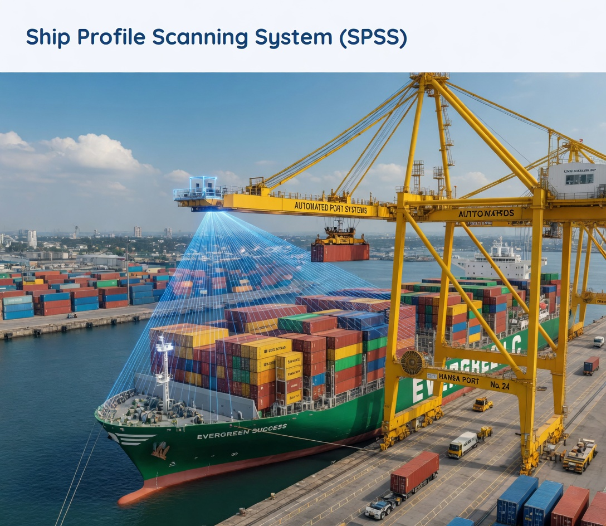

Perception Systems
Ship Profile Scanning System (SPSS)
LiDAR and camera-based vessel profiling for real-time detection of container stacks and ship structures to support crane planning.
C++, Python, PCL, LiDAR, Point Cloud, Sensor Fusion
Project Overview
Architected a 3D point-cloud processing pipeline for vessel scanning, enabling automated identification of container stacks and structures to support crane operation planning.
The Challenge
Vessel scanning involves large 3D data streams and changing maritime conditions. The system had to stay fast and stable while maintaining reliable structural detection in operations.
The Solution
Developed real-time container stack detection and classification with multi-sensor fusion, plus continuous profile updates to keep planning outputs synchronized with live terminal workflows.
Key Achievements
- High-accuracy vessel and stack profile detection.
- Faster crane planning support through automated scanning.
- Robust operation under practical maritime variability.